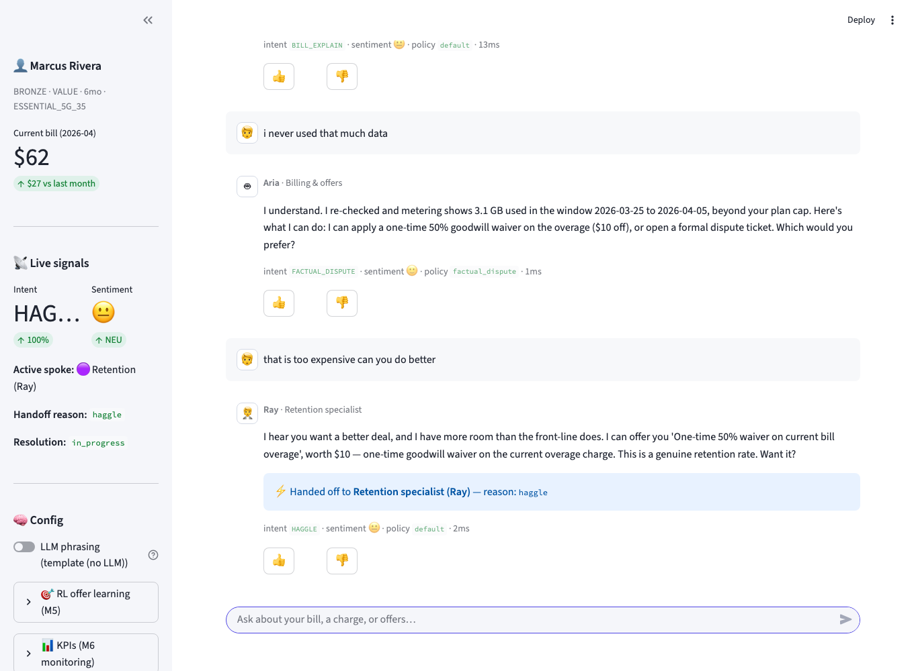
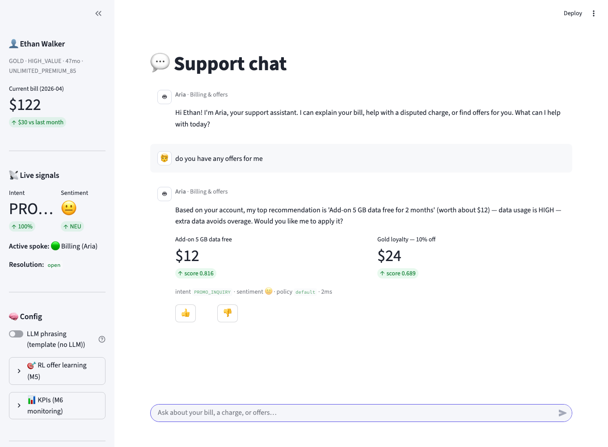

Final Project Report
This project designs and implements an intelligent conversational AI chatbot that delivers automated, accurate, real-time customer support for a telecom provider. It focuses on two high-volume support intents: billing-dispute resolution and personalized offer recommendation. The chatbot uses local Natural-Language-Understanding (NLU) models — a neural intent classifier and sentiment analyzer with rule-based entity extraction — feeding a deterministic dialogue brain organized as a hub-and-spoke multi-agent system: a coordinator routes each customer turn between a front-line billing/ offers agent and a senior retention specialist. Responses are produced by a Natural-Language-Generation (NLG) module (grounded templates optionally rephrased by a local Large Language Model) and offer recommendations are continuously improved by a reinforcement-learning feedback loop. The system validates customer identity before serving account data and exposes live signals and KPIs for monitoring. It is delivered as a runnable Streamlit Proof-of-Concept using 100% synthetic data.
Telecom customers most often contact support to question a bill (“why did my charge increase / this charge is wrong”) or to seek a better deal. Both are repetitive, rule-heavy and latency-sensitive — ideal for automation. Human agents are costly and inconsistent, and long hold times reduce satisfaction. The goal is an AI agent that understands a free-text query, acts on the customer’s real account, resolves the issue, and escalates hard cases to a specialist agent — all while keeping every stated fact grounded in account data so it never fabricates charges or offers.
The solution follows a “thick brain, thin interface” principle: the user interface only renders, while all understanding, decision-making and action live in a deterministic Python brain. Intent and sentiment are learned with supervised neural models (multi-layer perceptrons over TF-IDF features); entities are extracted with rules (standard for slot-filling in a PoC pipeline). A policy engine converts detected signals into tone/escalation directives. A hub-and-spoke coordinator provides multi-agent behavior without the agents calling each other directly. Recommendations are deterministic and explainable, then re-weighted by a reinforcement-learning bandit that learns from acceptance feedback. NLG stays grounded: the LLM (if enabled) only rephrases template text.
Each customer turn flows through a fixed per-turn pipeline: NLU → policy → hub routing → spoke flow → recommendation (+RL) → NLG.

| Component | Responsibility | Module |
|---|---|---|
| Coordinator (HUB) | NLU → policy → route → NLG; handoff detection | app/coordinator.py |
| NLU pipeline | Intent + sentiment + entities → TurnFrame | app/nlu/* |
| Policy engine | Tone / escalation directive | app/policy_engine.py |
| Billing spoke (Aria) | UC-01 dispute + UC-02 offers | app/flows/billing_flow.py, offers_flow.py |
| Retention spoke (Ray) | Negotiation ladder + simulated approval | app/flows/retention_flow.py |
| Recommendation engine | Band scoring + eligibility → ranked offers | app/recommendation_engine.py |
| RL bandit | Accept/decline feedback → offer re-weighting | app/rl/bandit.py |
| NLG | Template + optional local LLM rephrase | app/nlg/* |
| UI + monitoring | Chat, signals, KPIs, feedback | ui/streamlit_app.py, app/metrics.py |
The billing spoke hands off to the retention spoke when the customer haggles, sentiment turns negative for ≥2 turns, offers are exhausted, or a credit needs specialist authority. The two AI agents never talk directly — only the hub moves control. There is no human handoff in this PoC; the specialist is also AI.
| Milestone | What was done | Artifacts |
|---|---|---|
| M1 Data Collection | Curated synthetic customers, bills, payments, offers, dispute policies, usage and tickets | data/*.json, app/data_store.py |
| M2 Data Preparation | Hand-labeled intent + sentiment corpus; text normalization (lowercasing, contraction expansion, keeping $ and %) | app/nlu/dataset.py, preprocess.py |
| M3 Develop NLU Model | TF-IDF + MLP intent classifier (14 classes); TF-IDF + MLP sentiment; regex entity extraction; fused TurnFrame | app/nlu/{intent_model,sentiment_model,entities,pipeline}.py |
| M4 Create NLG Module | Grounded templates + pluggable LLM provider (ollama/template/openai/anthropic) with automatic fallback | app/nlg/{generator,llm_provider}.py |
| M5 Optimize with RL | Epsilon-greedy bandit; reward = offer accepted (1) / declined (0); persisted policy influencing ranking | app/rl/bandit.py |
| M6 Deployment & Monitoring | Streamlit chat UI (welcome→login→verify→chat), live signals, KPI aggregation, session logging | ui/streamlit_app.py, app/metrics.py |
Intent classes: GREETING, BILL_EXPLAIN, BILL_DISPUTE, FACTUAL_DISPUTE,
PROMO_INQUIRY, CONFIRM_YES, CONFIRM_NO, HAGGLE, CREATE_TICKET, TICKET_STATUS,
HUMAN_HANDOFF, PAYMENT_QUERY, GOODBYE, FALLBACK. Both classifiers are
MLPClassifier networks (a neural net) over TF-IDF bi-grams with L2
regularization; low-confidence intents defer to a keyword backstop so the system
works even before training.
Explain bill → surface the unusual charge (roaming/overage) → present evidence (tower logs / metering) → resolve via tier-based provisional credit, a one-time goodwill waiver, or a persisted dispute ticket.
The engine computes LOW/MED/HIGH bands (tier, tenure, churn proxy, usage),
filters by eligibility, scores each offer, and the bandit blends learned
acceptance value (0.7·base + 0.3·Q) into the ranking. Feedback from
accept/decline and 👍/👎 updates the persisted policy.

NLU models evaluated on a held-out stratified split; live KPIs aggregated from session logs.
The intent held-out figure is limited by the small
PoC seed corpus (1–2 test samples per class); at runtime the model trains on the
full corpus and is backed by a keyword fallback, so live behavior is stronger.
Enlarging app/nlu/dataset.py raises the metric directly. Metrics are
reproducible via python evaluate.py.
| Scenario | Steps | Expected outcome |
|---|---|---|
| Overage dispute → handoff → close (Marcus, BRONZE) | bill query → factual dispute → haggle → decline → accept | Handoff to Ray; offer applied under simulated approval; resolved |
| Roaming dispute → ticket (Ethan, GOLD) | bill query → “I never went to Mexico” → open ticket | Evidence shown; persisted dispute ticket created; resolved |
| Offer accept (Ethan) | “any offers?” → “yes apply it” | Top offer applied; RL reward recorded; resolved |
All three pass via python smoke_test.py (offline, no UI/LLM).
The PoC demonstrates an end-to-end conversational support agent that understands free-text queries, resolves billing disputes, recommends and applies offers, escalates through a hub-and-spoke design, learns from feedback, and is observable via live KPIs — satisfying all five project objectives. Future work: enlarge and mine the NLU corpus from real chat logs; replace synthetic adapters with live CRM/billing systems; add a transformer-based NLU; extend RL to a contextual policy over customer features; add a supervisor approval workflow and proactive validation of promised actions.
README.md and architecture/ (system, pipeline, hub-and-spoke, NLU/NLG/RL, data model).data/synthetic_telco.json, data/synthetic_tickets.json.